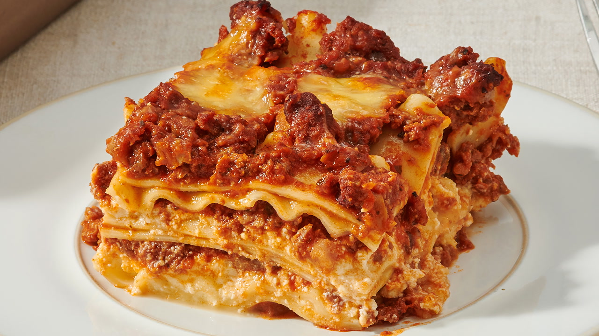

Traditional Italian lasagna
HOME

Description
One of the most loved foods in the world is finally here`!
This is a beautiful Italian Lasagna with layers of slow cooked Ragù Bolognese and Besciamella cheese sauce.
Though patience is required,
it is quite straight forward to make as you will see in the recipe video!
Homemade Lasagna three parts
There are 3 components to making lasagna
- The meat sauce
- The white sauce creamy and thick, but no cream required
- Assembling and baking
How to make lasagne
- Smear a bit of meat sauce on the base first
stops the lasagna sheets from sliding around;
- Layer 1 top with meat sauce, bit of white sauce
- Layer 2 lay out more lasagna sheets, then top with more
meat sauce and more white sauce
- Layer 3 repeat again, lasagna sheets, meat sauce then white sauce; and
- Topping cover with lasagna sheets, pour over remaining white sauce then sprinkle with cheese